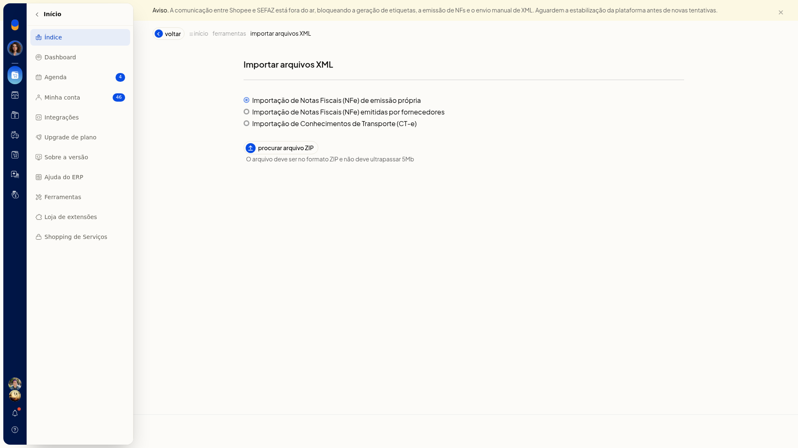
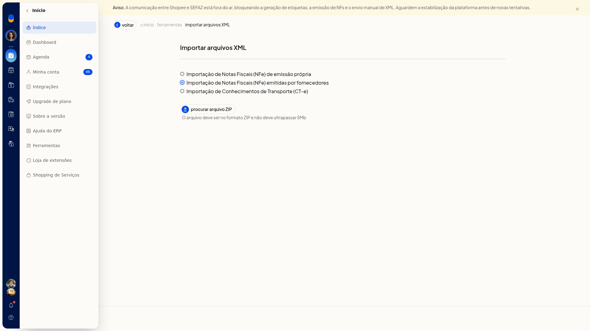
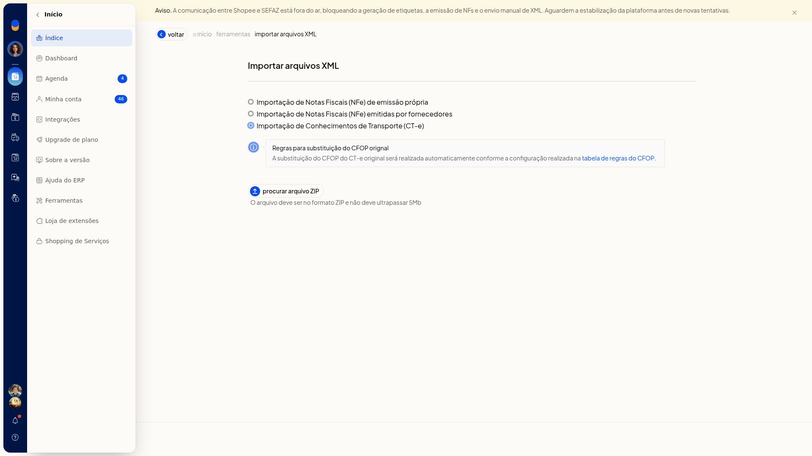

Importar XML de notas (manual, em lote e pela SEFAZ)
No ERP da Olist, você importa o XML de NF-e e de CT-e recebidos de terceiros para registrar a nota de entrada. Dá para enviar os arquivos na hora, incluir um ZIP em lote ou localizar a NF-e no Buscador de notas, que acompanha as notas disponíveis na Sefaz e permite iniciar a importação.
A importação manual também aceita NF-e e CT-e no mesmo envio, com marcadores opcionais. No CT-e, você escolhe se o CFOP permanece o do arquivo ou se segue a tabela de regras.
Pré-requisitos
- Tenha o XML da NF-e ou do CT-e. Na importação em lote, o arquivo é um ZIP de até 5Mb.
- A Importação de XMLs em lote e o Buscador de notas só aparecem com o certificado digital da empresa armazenado.
- Se o Buscador de notas não aparecer, peça acesso ao administrador da conta.
Importante
- A importação manual aceita até 50 XMLs.
- Marcadores é opcional na importação manual.
- Sem regra na tabela de CFOP, o CFOP do CT-e iniciado em 5 passa a 1 e o iniciado em 6 passa a 2.
Instruções
Importar o XML manualmente
- Acesse Suprimentos > Notas de Entrada.
- Clique em Importar XML. O mesmo comando está em Mais ações > Importar XML e em Buscador de notas > Ações > Importar XML.
- Escolha a aba NF-e, CT-e ou Ambos.
- Selecione os XMLs e, se quiser, informe Marcadores.
- Em CT-e, escolha Utilizar o CFOP presente no arquivo XML ou Substituir CFOP conforme tabela de regras de CFOP. Na aba Ambos, a tela reúne o tratamento da NF-e e a escolha de CFOP do CT-e.
Para montar a substituição, abra a tabela de regras de CFOP a partir dessa opção. Informe CFOP de saída e CFOP equivalente de entrada. A tela usa o exemplo 5.102 e 1.102. Inclua a regra na linha e clique em Salvar.
Importar XMLs em lote
-
Acesse Suprimentos > Notas de Entrada.
-
Abra Mais ações e clique em Importação de XMLs em lote. O mesmo item está em Buscador de notas > Ações.
-
Clique em Incluir arquivo para importação.
-
Escolha NFe emissão própria, Importação de Notas Fiscais (NFe) emitidas por fornecedores ou Importação de Conhecimentos de Transporte (CT-e).



-
Selecione o ZIP de até 5Mb. Em Importação de Conhecimentos de Transporte (CT-e), a substituição de CFOP segue a tabela de regras do CFOP.
A lista do lote mostra Incluir arquivo para importação e as colunas Tipo, Nome do arquivo, Data, Data prevista, Marcadores, Notas importadas e Situação.
Importar pelo Buscador de notas
-
Acesse Suprimentos > Notas de Entrada.
-
Clique em Buscador de notas. A tela acompanha e importa notas emitidas por terceiros direto da Sefaz. A manifestação serve para confirmar compras ou recusar notas desconhecidas.
-
Pesquise por número, emitente ou CNPJ. Ajuste o período em Últimos 30 dias, a ordenação para as mais recentes e os filtros.
-
Use as abas Todas, Sem manifestação, Confirmada, Ciência registrada, Desconhecida, Não realizada e Cancelada.

Nos filtros, a origem pode ser Notas na Sefaz, Notas importadas ou Todas. Em notas ignoradas, as opções são Não exibir, Exibir notas ignoradas e Exibir apenas notas ignoradas.
-
Abra Ações e clique em Importar XML ou em Importação de XMLs em lote para seguir com o arquivo da nota localizada.

Para buscar uma NF-e específica:
- No Buscador de notas, abra Ações e clique em Buscar nota pela chave de acesso.
- Em Chave de Acesso, informe a chave da NF-e.
- Clique em Continuar.
Configurar a importação automática
- No Buscador de notas, abra Ações e clique em Configurações de importação automática.
- Em NF-e, escolha Todos os fornecedores ou Escolher individualmente. No escopo individual, só os CNPJs listados são importados. Cada fornecedor pode ser refinado por NCM ou CFOP ao editá-lo.
- Defina a manifestação padrão entre Ciente da operação e Operação confirmada.
- Use Adicionar CNPJ na lista de exceções. Os CNPJs informados não têm a NF-e importada automaticamente.
- Em CT-e, escolha Todos os prestadores ou Escolher individualmente. Essa aba não tem manifestação padrão.
Informações adicionais
- Quando a pesquisa do Buscador de notas não encontra notas, a tela informa que a pesquisa não retornou resultados e que nenhuma nota fiscal de terceiros foi encontrada.
- A situação da manifestação no buscador aparece nas abas Sem manifestação, Confirmada, Ciência registrada, Desconhecida, Não realizada e Cancelada.